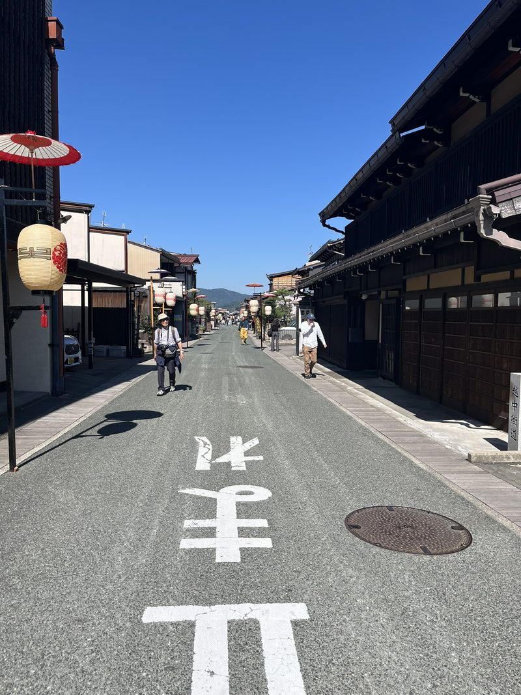
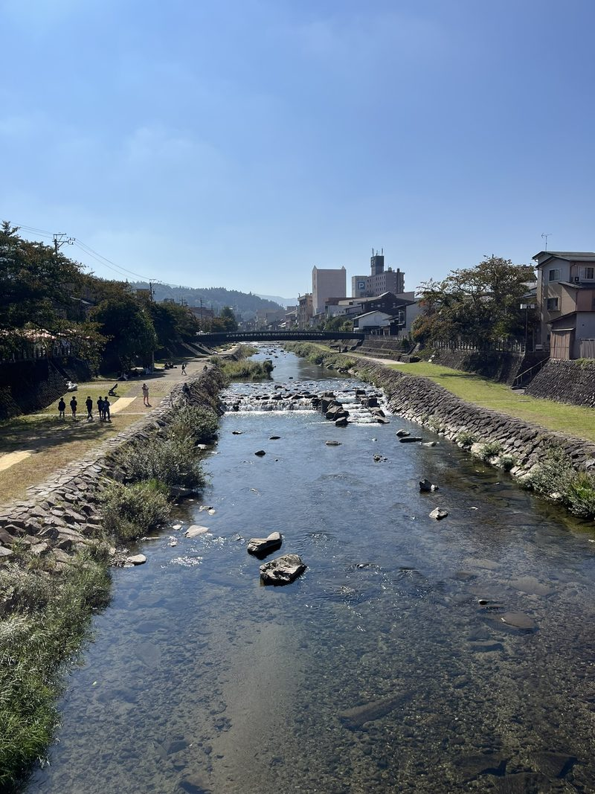
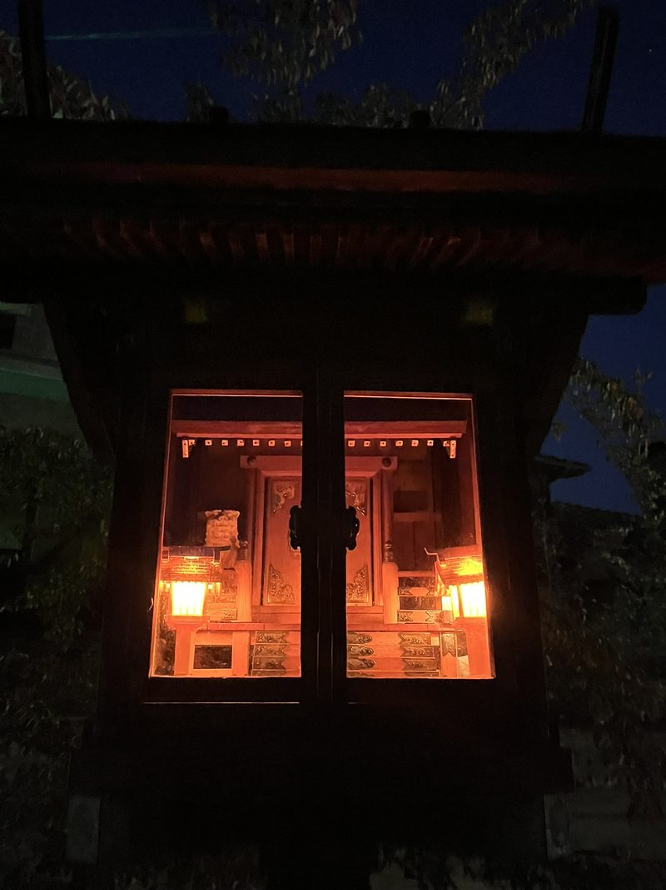
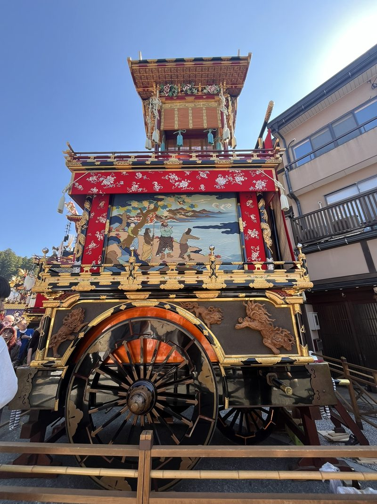
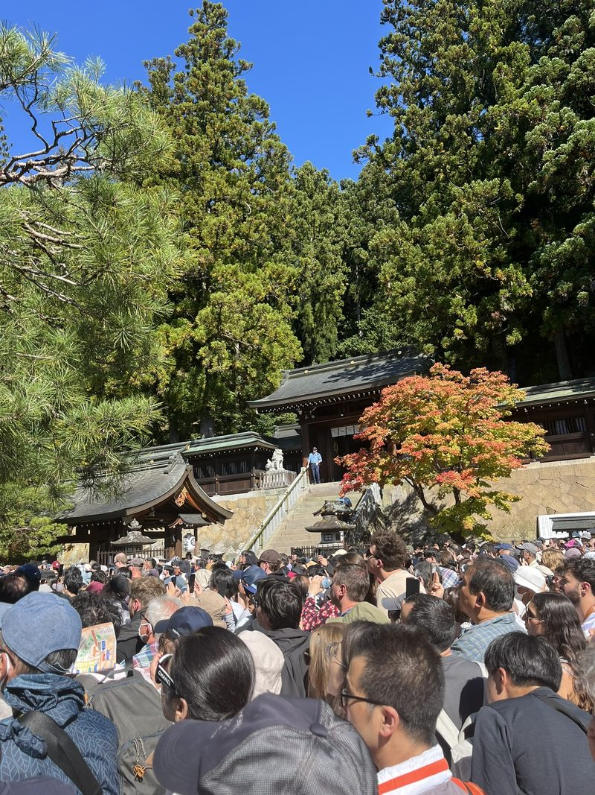
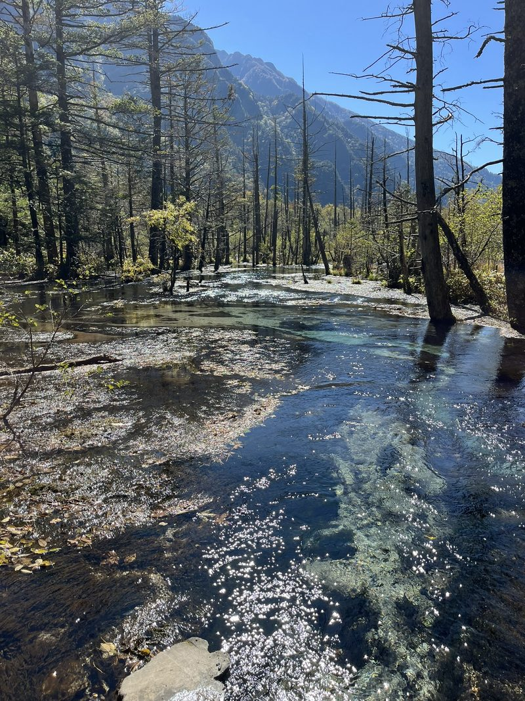
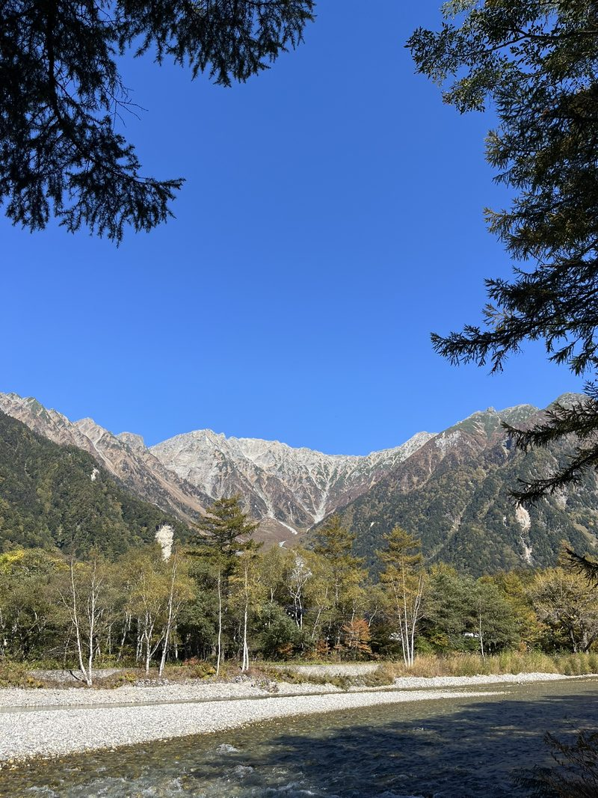
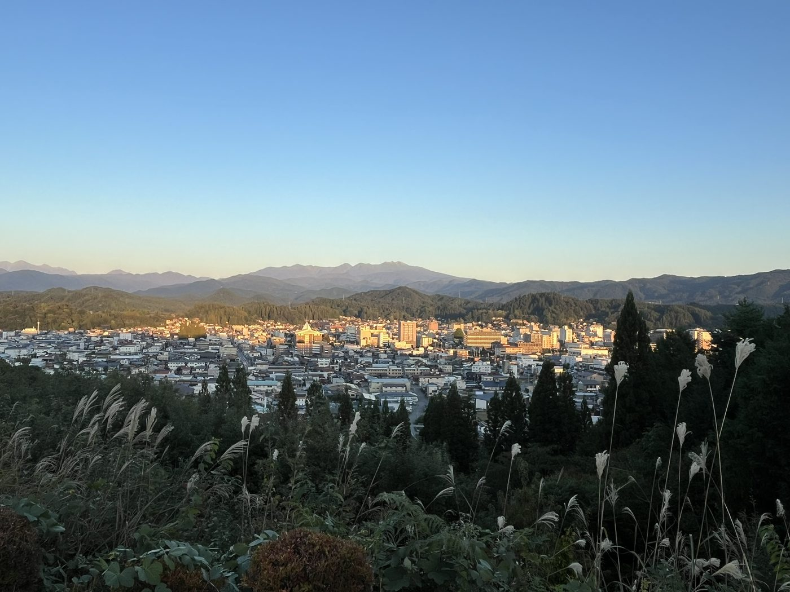

Zoals bij elk land hangt er een bepaald geurtje aan Japan: soms wat weeïg, soms wat vuilnis, gebakken varkensvet, eetwalmen in het algemeen, vuur aan de kant van de weg (waar ze in Azië wat makkelijker in zijn; zo reed ik in Thailand eens uren op een motor door verbrand berglandschap dat boeren aansteken voor vruchtbare grond). Maar in Takayama is het bijna louter de berglucht die de straten domineert. Na een reisdag zonder einde zinken we neer in een sfeervol barretje met platenspelers. Cocktails zijn even duur als bier; we drinken shochu highballs en kamikaze en krijgen daarbij gekookte pinda’s en edamameboontjes. We zijn tevreden gasten en weten dat fooi geven hier uit den boze is. Als we het bijna opdringen door het in een schaaltje op de bar te smijten, is het ongemak gigantisch. De botsing tussen beleefdheid en weigering bij de barman leidt tot een verstarde lach, waarna we ons snel uit de voeten maken.
Lampionnen en bamboefluiten
We verblijven in het pittoreske oude centrum, in een smoezelig hostel met gebruikte fleecedekentjes, snurkende buren en doorrookte kamers, maar direct naast de oever van de rivier die het hele stadje voorziet van een geruststellende stroom. Lopend op de door erosie verweerde oever kijk je omhoog naar waar de stad op z’n kop staat.



De herfstoogst en de voorbereiding op de komende winter worden traditioneel gevierd, met goedkeuring van UNESCO. Blikvangers waarvoor veel Japanners ernaartoe reizen zijn de parades met praalwagens, die de weelde uit de Edo-periode (1603 tot 1868) weerspiegelen. Zo wordt de godheid verplaatst tussen de tempels. Op de wagens zitten mensen verstopt in judoka-outfits, die karakuri-poppenshows uitvoeren onder begeleiding van plechtige bamboefluiten. ’s Avonds brengen de lampionnen, die doen denken aan uitkijkpostjes en kijkdozen op ooghoogte, als enige verlichting op straat en aan de wagens een eeuwenoude sfeer.


Mono no aware
Ondertussen voedt de markt de hordes en onze onbevredigbare zieltjes: okonomiyaki (de fameuze smeuïge hartige pannenkoek), mozzarellapancake, gezoete ronde poffertjes, octopusballetjes, op smaak gebrachte komkommer en aardappels op stok, geglazuurde appel. We dachten even dat we kinderen flessen mayo zagen leegzuigen, maar het bleek pudding in andere verpakking. Het goedje is bevroren en het is hard werken om het eruit te krijgen.
Volgens het shintoïsme zijn we onlosmakelijk verbonden met de aarde om ons heen. Je kunt je voorstellen dat ze de natuur vereren: de schoonheid is overal. De veranderende kleuren van de bladeren worden niet alleen gezien als mooi, maar als een direct teken van de aanwezigheid en de esthetiek van de kami (goden). In elke beek, boom of berg kan een spirituele geest huizen. De dagen zijn een ode aan de vergankelijke schoonheid van de natuur: mono no aware.
Zelfs kleine honden worden rondgeparadeerd in kinderwagens, al is dat meer de ultieme vorm van de Japanse kawaii-cultuur (schattigheid). Betere foto’s schiet je niet van ze, in deze klassieke straatjes en gestoken in een op maat gemaakte kimono. Ook krijgt jong nageslacht traditioneel een gezondheidsreiniging in de schrijn, maar bij gebrek daaraan in deze vergrijzende maatschappij vervullen steeds vaker huisdieren die rol.
Turquoise water
We zoeken de schoonheid verder op richting de bergen, die zo aan je kunnen trekken. Zelf heb ik altijd de neiging om de klim te maken (die na een paar stappen ontmoedigd wordt), om alleen maar te zien dat er achter die berg altijd wel weer een andere staat.
De buschauffeur rijdt ons naar Kamikochi door het rustige berglandschap, met verkeersleiders die de tegenliggers over de smalle bruggen leiden. De aankomst is spectaculair: je blijft lang kijken naar de bergen, die per groef weer een andere kleur aannemen, dezelfde als beneden in de bomen: groen, rood en geel. Het water is knalhelder met een turquoise bodem en heeft een bevriezend effect. Het is te druk op deze zondag met louter zon en blauwe lucht. We steken de rivier over en lopen door het bos op een paadje van houten stellages boven het moeras uit. Er zijn momenten langs de oever dat het aangenaam stil is, met alleen het kabbelende en glinsterende water langs ons, gefilterd door de kleurige bladeren. Langs de uitwijkplekken stapelen locals riviersteentjes op elkaar.


Er staan natuurtentjes met gerookte vis, maar de drukte is zo erg dat we die overslaan en onigiri’s aan het water eten. Vervolgens worden we opgeschrikt uit het veilig gewaande pad. De eerste aap met een kindje aan de buik hangend veroorzaakt nog vertedering, maar de massale aanval die volgt van groepen macho’s laat de benen sidderen. Mensen spurten alle kanten uit en E.L.K. vond achteraf dat ik haar moest beschermen, maar het gesprint en gesis dat lange tanden blootgeeft maakt indruk. Pas na de aap uit de boom te hebben gekeken, vervolgen we onze weg. Een schaap in de kudde kan niet verdwijnen en dus verwijderen we ons maar. Hoewel de bussen maar blijven komen, staan we er een uur voor in de rij. Ongedwee tussen gedwee Japanners besluiten we het toeristische deel van het land verder links te laten liggen.
Gouden stad
Op vaststaande tijden gaat hier muziek af. Om 17 uur op zaterdag klinkt die voor ons op een idyllisch moment: als we net een grimmig pad oplopen terwijl de zon snel verdwijnt. Maar direct daarna openbaart het park zich aan ons als niets anders dan een advertentie voor het gebied: spelende kinderen, plezierige kreetjes en een gouden stad om op uit te kijken.
We eten rijk op onze laatste avond, met hida-beef stew en gebakken tofu, voor we de bus naar Osaka pakken. Langs tankstations met douches, wasserettes, hondenuitlaatparken en sushirolls. Met onze schoenen uit en voeten op een daarvoor bestemd voetenbankje kijken we uit op de neongekte.
